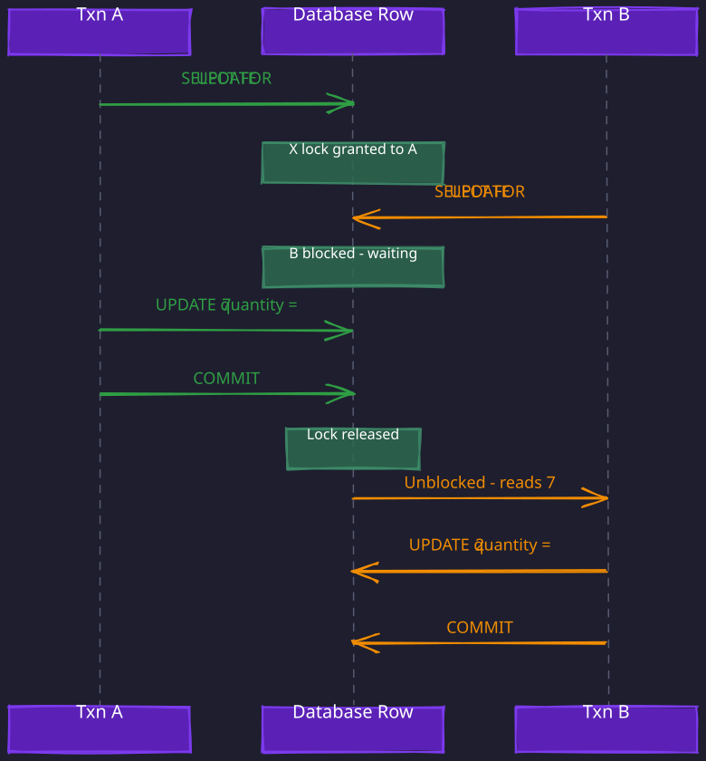
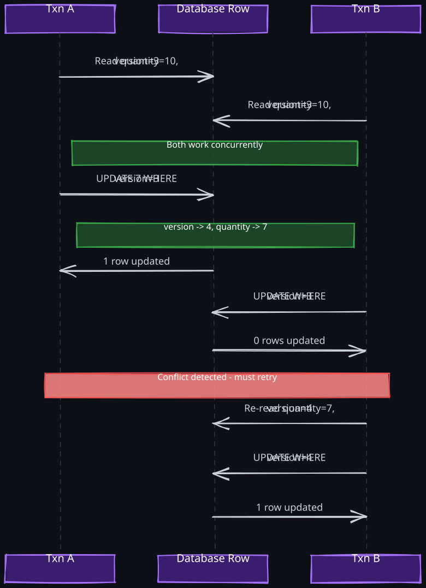
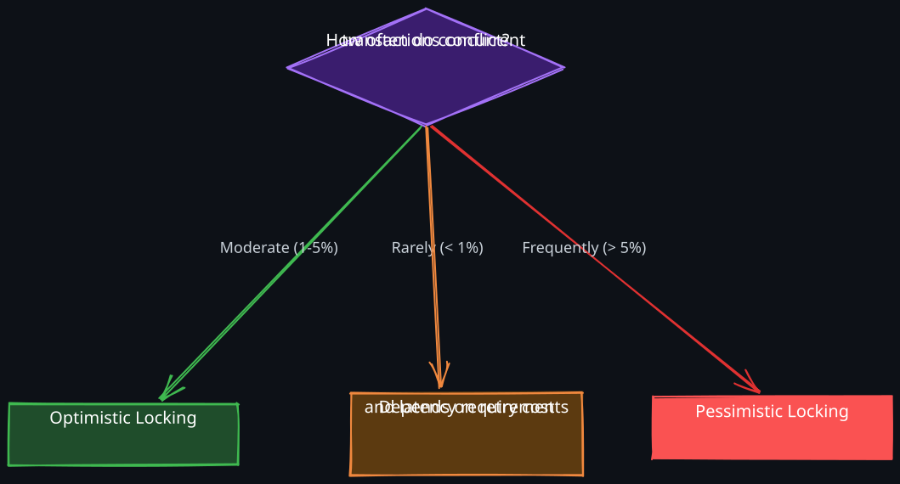

Related: 05-Isolation-Levels, 07-Two-Phase-Locking, 06-MVCC, 04-Distributed-Lock, 05-Distributed-Transactions, 03-Consensus-Algorithm
The Story
Amazon’s Dynamo paper has a detail most people skim past. They studied what happens when a customer adds items to a shopping cart during a network partition. With pessimistic locking, the cart returns an error. With optimistic concurrency, it might show stale items. Amazon calculated the revenue loss from each scenario and found that cart errors cost dramatically more than stale data — customers abandon carts on errors but barely notice a stale item list. A billion-dollar business decision was hiding inside a concurrency control choice. The “correct” theoretical answer and the profitable answer were different.
1. The Fundamental Problem
Every system that allows multiple actors to read and modify shared state faces a core question: how do you prevent two concurrent operations from silently overwriting each other’s work?
Consider two transactions that both read an account balance of 80. If both succeed, the balance is -$60 — a state neither transaction would have allowed individually. This is a lost update, and it is the canonical problem that concurrency control exists to solve.
Two philosophical approaches emerge from this problem:
- Pessimistic — assume conflicts will happen and prevent them by holding locks. No other transaction can touch the data while you hold the lock.
- Optimistic — assume conflicts are rare and detect them at commit time. Let everyone work freely, but reject any transaction that operated on stale data.
The choice between them is fundamentally a bet on your workload’s conflict rate.
2. Pessimistic Locking
1. The Core Idea
Pessimistic locking prevents conflicts by acquiring a lock before accessing data and holding it for the entire duration of the transaction. While you hold the lock, no conflicting operation can proceed — other transactions must wait (block) until the lock is released. The mental model is straightforward: treat every access as if a conflict is about to happen. Pay the cost of coordination upfront so you never have to deal with a conflict after the fact.
2. Shared and Exclusive Locks
Not all access patterns conflict with each other. Two transactions that only read the same row are perfectly safe to run concurrently. This observation leads to two types of locks:
- Shared lock (S) — acquired for reads. Multiple transactions can hold shared locks on the same resource simultaneously. A shared lock guarantees the data will not be modified while you are reading it.
- Exclusive lock (X) — acquired for writes. Only one transaction can hold an exclusive lock, and no shared locks can coexist with it. An exclusive lock guarantees nobody else can read or write the data while you are modifying it.
The compatibility matrix captures which locks can coexist:
| Shared (S) requested | Exclusive (X) requested | |
|---|---|---|
| No lock held | Granted | Granted |
| Shared (S) held | Granted | Blocked |
| Exclusive (X) held | Blocked | Blocked |
The key insight: reads do not conflict with reads, but any write conflicts with everything. This is why shared locks exist — they allow read concurrency while still protecting against writes.
3. How It Works Step by Step
Consider two transactions operating on the same inventory row:
Transaction B is forced to wait. When it finally reads the data, it sees A’s committed result. No conflict is possible because concurrency is serialized through the lock.

4. Deadlocks
Pessimistic locking introduces a problem that optimistic locking never has: deadlocks. A deadlock occurs when two transactions each hold a lock that the other needs, forming a circular wait.
Transaction A: Transaction B:
────────────── ──────────────
Lock row X Lock row Y
... ...
Try to lock row Y Try to lock row X
-- BLOCKED (B holds Y) -- BLOCKED (A holds X)
Neither can proceed. The system is stuck.
Why deadlocks are inevitable: whenever transactions can acquire multiple locks in different orders, circular dependencies become possible. You cannot eliminate them entirely without imposing a global lock ordering — which is impractical in most real systems.
How databases resolve deadlocks:
- Deadlock detection — the database maintains a wait-for graph. When it detects a cycle, it aborts one transaction (the “victim”) and releases its locks. The victim is typically the transaction that has done the least work, making rollback cheapest.
- Lock timeouts — if a transaction waits longer than a threshold, it is aborted. Simpler than detection but can cause unnecessary aborts.
5. Cost of Pessimistic Locking
The fundamental cost is reduced concurrency. Even if two transactions would not have conflicted, the second one must wait if the first holds the lock. Under high concurrency, this leads to:
- Lock contention — many transactions waiting for the same resource
- Convoy effect — a slow transaction holding a popular lock causes a queue of blocked transactions
- Throughput degradation — the system spends more time waiting than working
3. Optimistic Locking
1. The Core Insight
If conflicts are rare — say, 1 in 1,000 transactions actually modifies the same row concurrently — then acquiring and releasing locks on every transaction is wasteful overhead. The insight behind optimistic locking is: skip the lock entirely, let everyone work freely, and check for conflicts only at commit time. In the rare case where a conflict did occur, abort and retry.
This trades the guaranteed cost of locking on every operation for an occasional cost of retrying on conflict.
2. Compare-And-Swap: The Underlying Primitive
Before discussing specific mechanisms, it helps to see the primitive they all rest on. Compare-And-Swap (CAS) is an atomic operation with the semantic: “update this value to X only if its current value is still Y.” The comparison and the update happen as a single indivisible step — no other operation can slip between them.
In hardware, CAS is a single CPU instruction used to build lock-free data structures. At the database level, the same idea appears as a conditional update — a WHERE clause that checks an expected state before modifying it:
UPDATE table
SET new_value = X
WHERE key = K AND current_value = YIf another transaction already changed the value, the WHERE clause matches zero rows and the update does nothing. The application detects this via the affected row count.
CAS has two flavors in practice, differing in what the precondition checks:
- Version-based CAS — the precondition checks an auxiliary version counter. Any change to the row bumps the version, so the check detects any concurrent modification, regardless of which field changed.
- State-based CAS — the precondition checks the actual business state that matters (e.g.,
status = 'available',qty >= 1). The check detects only modifications that would invalidate this specific operation.
Version-based is general-purpose — one mechanism works for every update. State-based is surgical — it encodes the meaningful invariant directly into the query. Both are CAS; they differ in what “match” means.
3. Version-Based Optimistic Locking
The most common form of optimistic concurrency. Every row carries a version number (or timestamp). A transaction reads the row, notes the version, does its work, then writes conditionally:
UPDATE items
SET quantity = 7, version = version + 1
WHERE id = 42 AND version = 3If another transaction already modified the row, version is no longer 3, the WHERE clause matches zero rows, and the write fails. The application detects this (via affected row count) and retries: re-read the current state, recompute, attempt again.

Version-based CAS fits when:
- The operation is “read-modify-write” with arbitrary logic between read and write
- You need to detect concurrent modification regardless of which field changed
- The transaction operates on a single logical entity and any change to that entity could invalidate your logic
4. State-Based CAS: When the Precondition Is the Point
Many operations are fundamentally state transitions — available -> booked, pending -> completed, qty -> qty - 1. In these cases, the meaningful precondition is the business state itself, not a version counter. Encoding the precondition directly into the query is simpler, cheaper, and more expressive than maintaining a version column.
Consider seat booking during a flash-sale concert. A user requests 4 specific seats. Thousands of users are concurrently competing for overlapping seat sets. Compare the three approaches:
- Pessimistic — lock all 4 seat rows, check availability, mark them booked, commit. Any other transaction touching any of those seats must wait. Under extreme contention, the lock queue grows unbounded and tail latency explodes.
- Version-based optimistic — read each seat with its version, verify all 4 are available, then write each seat with a version check. If any version check fails, retry the whole booking. Retries cascade under contention, and a version bump from an unrelated field (e.g., seat description edit) triggers spurious retries.
- State-based CAS — issue a single conditional update that bakes the “must be available” check directly into the query:
UPDATE seats
SET booking_id = $my_booking
WHERE show_id = $show
AND seat_id IN (12, 13, 14, 15)
AND booking_id IS NULL -- Ensure that the seat is blocked/reserved if there is no existing booking idThe database atomically scans those 4 rows and updates only the ones still unbooked. The affected row count tells the application exactly what happened:
4rows — full success, all seats reserved2rows — partial success; two seats were grabbed by someone else. The application can accept the partial reservation, release the two and fail, or try alternate seats0rows — all seats taken; offer alternatives
Notice what this approach did not need:
- No version column on the seats table
- No explicit read-before-write (the check happens inside the update)
- No retry loop (partial success is handled directly, not by retrying)
- No lock held across a network round trip
The key insight is that the precondition is the business rule. “Booking succeeds if the seat is still unbooked” is expressible directly in SQL. A version counter would be an indirection — any unrelated change to the seat row would force retries even though the booking-relevant state did not change.
5. Other State-Based CAS Patterns
The seat booking pattern generalizes. A few common variants:
- Inventory decrement —
UPDATE inventory SET qty = qty - 1 WHERE item_id = X AND qty >= 1. Atomically enforces the non-negative constraint and decrements in one step. Affected row count distinguishes “purchased” from “sold out”. A version-based approach would require read + compute + conditional write + retry loop; state-based CAS collapses this into one atomic statement. - State machine transitions —
UPDATE orders SET status = 'shipped' WHERE order_id = X AND status = 'packed'. Enforces the valid transitionpacked -> shippedinside the query. Orders in any other state (canceled, already shipped, pending) are silently rejected. The business rule lives as a precondition. - Distributed leader election —
SET leader = node_A IF leader IS NULL(etcd, Redis, ZooKeeper). A node becomes leader only if no leader is set. The CAS semantic prevents split-brain at the storage layer with no extra coordination. - Idempotency keys —
INSERT INTO payments (idempotency_key, ...) VALUES (...) ON CONFLICT DO NOTHING. The key itself is the precondition — a duplicate request detects the conflict and the application returns the already-recorded result.
6. Choosing Between Version-Based and State-Based CAS
The practical rule: if you can express the precondition as a WHERE clause on the current business state, use state-based CAS. It avoids the version column, avoids spurious retries on unrelated modifications, and lets the affected row count carry useful partial-success information.
| Situation | Prefer |
|---|---|
| Arbitrary read-modify-write on a complex entity | Version-based |
| Any concurrent change to the row could invalidate the logic | Version-based |
| State transition where the precondition is a specific field value | State-based |
| Atomic counter increment/decrement with bounds (inventory, credits) | State-based |
| Batch operations where partial success is meaningful | State-based (use affected row count) |
| Competing for scarce exclusive resources (seats, leader slot, unique key) | State-based |
| Multiple unrelated fields updated by different operations on the same row | Version-based or column-level locks |
Reserve version-based locking for cases where the operation’s correctness depends on the entire entity not changing, not just a specific field.
7. The Retry Problem Under High Contention
Optimistic locking has an Achilles’ heel: what happens when conflicts are frequent?
If 100 transactions concurrently modify the same row, only 1 succeeds on each round. The other 99 must retry. On the next round, 98 fail again. This creates several pathological behaviors:
- Livelock — transactions keep retrying but keep failing because other retries keep succeeding first. The system is doing work but not making proportional progress.
- Retry storms — each failed transaction re-reads and retries, multiplying the load on the database. Under heavy contention, the system does more wasted work than useful work.
- Starvation — some transactions may be repeatedly unlucky and never succeed, especially without fairness guarantees.
- Amplified latency — tail latencies grow exponentially as transactions require multiple retries.
Mitigations include exponential backoff with jitter (to spread out retries), retry limits (to fail fast rather than livelock), and — at a certain contention threshold — switching to pessimistic locking.
4. When to Choose Each Approach
The decision variable is conflict rate — how often two concurrent transactions actually touch the same data.

| Factor | Favors Optimistic | Favors Pessimistic |
|---|---|---|
| Conflict rate | Low — most transactions do not touch the same data | High — hot rows or accounts updated frequently |
| Read/write ratio | Read-heavy — reads never conflict | Write-heavy on shared data |
| Transaction duration | Short — less time for conflicts to occur | Long — holding locks is better than retrying expensive work |
| Retry cost | Low — recomputation is cheap | High — complex business logic, external side effects |
| Latency sensitivity | Tolerant — occasional retry is acceptable | Strict — cannot afford unpredictable tail latency |
| Throughput priority | High — no lock overhead on the common path | Moderate — willing to trade throughput for predictability |
The key mental model: optimistic locking optimizes for the common case (no conflict) at the expense of the uncommon case (conflict requires retry). Pessimistic locking provides predictable behavior regardless of conflict rate, at the cost of lower throughput.
Real-World Examples
Optimistic works well:
- Wiki or CMS edits — users rarely edit the same page simultaneously
- Shopping cart updates — each user modifies their own cart
- Configuration changes — low frequency, different keys
Pessimistic works well:
- Bank account transfers — high-value rows updated by many concurrent transactions
- Ticket booking — many users competing for the same seats
- Inventory decrements during flash sales — extreme contention on the same rows
5. Connection to Distributed Systems
On a single database node, these concepts map cleanly to SQL locks and version columns. But in distributed systems, the same philosophical split applies — it just gets harder.
1. Pessimistic in Distributed Systems: Distributed Locks
The distributed equivalent of a database lock is a Distributed Lock. A service acquires a lock on a resource (via ZooKeeper, etcd, Redis, etc.) before modifying it. The challenges multiply:
- Lock holder failure — if the lock holder crashes, the lock must eventually be released. This requires TTLs or lease-based locks, which introduce a window where two holders might exist (the old holder thinks it still has the lock; the new holder has acquired it after TTL expiry).
- Network partitions — a lock holder may be partitioned from the lock service but still believe it holds the lock. This is the core problem that consensus algorithms like Raft and Paxos solve — ensuring agreement on who holds the lock despite failures.
- Fencing tokens — to prevent stale lock holders from causing damage, the lock service issues a monotonically increasing fencing token with each lock grant. Storage systems reject writes with an outdated token, providing safety even when locks are not perfectly reliable.
2. Optimistic in Distributed Systems: CAS and Version Vectors
Optimistic concurrency control scales more naturally to distributed systems because it does not require coordination during the operation — only at commit time.
- Conditional writes — DynamoDB, Cosmos DB, and Cassandra all support conditional updates (analogous to
UPDATE WHERE version = N). These are single-item CAS operations that work across distributed storage. - ETags in HTTP — the
If-Matchheader implements optimistic concurrency for REST APIs. The client reads a resource with an ETag, then sends an update conditioned on that ETag. If another client modified the resource, the server returns412 Precondition Failed. - Version vectors — in multi-leader or leaderless replication, a single version number is insufficient because updates can arrive from multiple nodes. Version vectors track the version per replica, enabling detection of concurrent updates vs. causal ordering.
The tradeoff remains the same: pessimistic (distributed locks) provides strong mutual exclusion but is expensive and fragile across network boundaries. Optimistic (CAS / version vectors) allows higher throughput but requires conflict resolution logic.
6. Technology-Agnostic Comparison
| Dimension | Pessimistic | Optimistic |
|---|---|---|
| Mechanism | Acquire lock before access; hold until commit | Read version; conditional write at commit |
| Conflict handling | Prevention — conflicts cannot occur | Detection — conflicts discovered at commit time |
| Blocking behavior | Transactions wait for locks | No waiting; failed transactions retry |
| Deadlock risk | Yes — circular lock dependencies possible | None — no locks to create cycles |
| Livelock risk | None — waiting transactions eventually proceed | Yes — under contention, retries can cascade |
| Throughput under low contention | Lower — lock acquisition overhead on every operation | Higher — no coordination overhead |
| Throughput under high contention | Stable — serialized access is predictable | Degrades — retries amplify load |
| Implementation complexity | Lock management, deadlock detection, timeout handling | Version tracking, retry logic, idempotency |
| Distributed system fit | Harder — requires distributed lock service | Easier — CAS operations are naturally partitionable |
Revision Summary
- The fundamental problem is preventing lost updates when multiple transactions modify the same data concurrently.
- Pessimistic locking acquires locks before access and holds them for the transaction duration. Shared locks allow concurrent reads; exclusive locks serialize all access. Deadlocks are an inherent risk, resolved via detection (wait-for graphs) or timeouts.
- Optimistic locking skips locking entirely, relying on Compare-And-Swap to detect conflicts at commit time. CAS appears in two forms: version-based (detect any change via a version counter — general purpose) and state-based (encode the business precondition directly in the
WHEREclause — ideal for state transitions like seat booking, inventory decrement, leader election, where affected-row count carries partial-success information). Under low contention both provide higher throughput than locking; under high contention they suffer from livelock, retry storms, and starvation. - Conflict rate is the primary decision variable. Low conflict rate favors optimistic; high conflict rate favors pessimistic.
- In distributed systems, pessimistic locking maps to distributed locks (with fencing tokens for safety), while optimistic locking maps to conditional writes, ETags, and version vectors.
Deep Understanding Questions
- Retry amplification: If 50 transactions simultaneously attempt optimistic updates on the same row, how many total update attempts occur before all 50 succeed? What is the time complexity? How would you mitigate this? Ans:
- Deadlock vs. livelock: Both cause transactions to fail to make progress. What is the fundamental difference in how they manifest, and why does pessimistic locking risk one while optimistic locking risks the other? Ans:
- Fencing tokens: A service acquires a distributed lock with TTL=10s, then experiences a GC pause for 15 seconds. It resumes and writes to storage, believing it still holds the lock. How does a fencing token prevent data corruption, and what assumptions must the storage system make? Ans:
- Hybrid strategies: Some systems use optimistic locking by default but escalate to pessimistic locking when retry counts exceed a threshold. What are the tradeoffs of this approach? How would you decide the escalation threshold? Ans:
- CAS on distributed storage: DynamoDB supports conditional writes on a single item. Why is single-item CAS straightforward in a distributed database but multi-item CAS (transactions across multiple items) is fundamentally harder? What does this have to do with consensus? Ans:
- Version vectors vs. version numbers: Why is a single version counter insufficient for optimistic concurrency control in a multi-leader replicated system? Construct a scenario where a single counter leads to incorrect conflict detection. Ans:
- Phantom reads and pessimistic locking: Standard row-level exclusive locks prevent lost updates on existing rows. But what if a transaction’s logic depends on the absence of a row (e.g., “insert if not exists”)? How do predicate locks or gap locks address this, and what is their performance cost? Ans:
- Convoy effect: Explain how a single slow transaction holding an exclusive lock on a hot row can degrade system-wide throughput. How does this differ from simple lock contention, and what mitigation strategies exist? Ans: